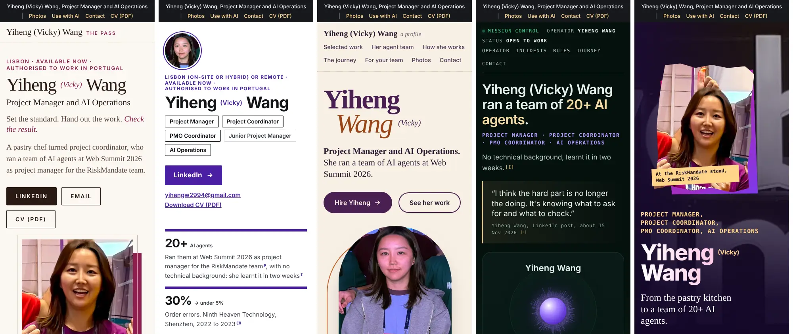
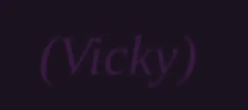

Synthetic users: Yiheng (Vicky) Wang, round 1
Site: https://yiheng-wang.agenticcells.site/ at 549555d (v0.1.23). Run: 23 November 2026, about 14:25 UTC, by design.b.rounds. Look score: 3.6 (3, 4, 3, 4, 4). Best design votes: The Brief three times, The Profile and The Pass once each. Nobody said "wow". The review.
Method: Synthetic users. One agent played five personas, in its own folder: - a phone visitor; - a recruiter for a project-management or AI-operations role; - a low-vision reader; - a design critic; - someone from her hospitality past.
These are simulations, and never replace a real person.
| Persona | Look | Best | Weakest | The one change |
|---|---|---|---|---|
| Phone visitor | 3 | The Brief | The Journey | "a short 'In 30 seconds' summary with the three buttons" |
| Recruiter | 4 | The Brief | Mission Control | "put the Ninth Heaven and Un P'tit Truc results in the first screen of every design" |
| Low-vision reader | 3 | The Brief | Mission Control | "raise the contrast and size of small labels and source tags, and fix the dark-mode '(Vicky)'" |
| Design critic | 4 | The Profile | The Journey | "let each design own its lower half" |
| Former colleague | 4 | The Pass | Mission Control | "a photo from her pastry years, if she has one and chooses to share it" |
Agreed by three or more
- The Brief is the clearest: "20+ AI agents", "30% → under 5%", "98% on time", on the first screen.
- The pages are too long, and the lower halves repeat nearly word for word across the five designs.
- The source tags get in the way. "cake ordersLIY", "framework.CVY": they are honest, but they fuse with the words.
- The kitchen-to-project-management line is the strongest thing on the site: "Set the standard. Hand out the work. Check the result."
- Mission Control is striking, but the hardest to use.
Five ideas, or one layout?
Both. The first screens and the agent pictures are five real ideas: - a kitchen brigade; - a printable CV with an evidence table; - an editorial profile with a radial chart; - a live console; - a numbered photo story.
Below the fold, all five share one body of text in mostly one order.

